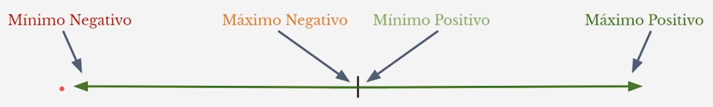

Binario con punto flotante¶
%%TODO: Terminar de tomar apuntes de esta clase%%
El sistema de binario con punto flotante se usa para representar números muy grandes. Se usa la siguiente ecuación:
Siendo la Mantisa (M), el Exponente (E) y la Base del sistema (B), en nuestro caso B es 2 ya que estamos usando sistema binario.
A la hora de interpretar binarios escritos en este sistema siempre tenemos que saber cuantos bits hay en la Mantisa, cuantos en el Exponente y en que sistema estan representados cada uno.
Ejemplo: 1101001 4 Bits de Mantisa representado en BSS y 3 bits de Exponente representado en BSS.
Mantisa fraccionaria¶
Cuando la mantisa es fraccionaria se le agrega un \(\color{cyan}0,\) adelante de la mantisa, quedando la ecuación final de esta manera:
Ejemplo: Sistema 5 bits de mantisa fraccionaria y 3 bits de exponente, ambos en BSS: 01010011
Cuando el sistema tiene signo el bit del signo se saca de la mantisa y te quedas con los bits restantes.
Ejemplos:
- 1001101. 4 Bits Mantisa fraccionaria BCS, 3 exponente BCS
- 01011010. 4 Bits Mantisa Fraccionaria BCS, 4 exponente BSS
Mantisa fraccionaria normalizada¶
Ya que hay muchas maneras de poder representar un mismo numero con el sistema de Punto flotante se creo la Mantisa Fraccionaria normalizada, con esta representacion la mantisa siempre debe comenzar con \(\color{cyan}0,1\), de no ser asi no se puede representar el numero.
Se representa de la misma manera que la Mantisa Fraccionaria
Ejemplos:
- 1000101. 4 bits Mantisa fraccionaria normalizada BSS, 3 exponente BCS
- 0101110. 4 bits mantisa fraccionaria normalizada BSS, 3 exponente Ca2. No se puede representar ya que la mantisa no está normalizada.
- 011100. 4 bits Mantisa fraccionaria normalizada BCS, 2 exponente BSS.
Al primer bit ser el signo, la mantisa si comienza con 1 y se puede representar.
Mantisa fraccionaria normalizada c/ bit implicito¶
Ya que todas las mantisas normalizadas comienzan con \(\color{cyan}0,1\) no es necesario almacenar ese 1, ganando así un bit mas en la mantisa. Con el bit implícito la ecuación final se modifica quedando así de esta manera:
Ahora todas las mantisas comienzan con \(\color{cyan}0,1\) aún cuando la mantisa comienza por 0
Ejemplo:
- 1000101. 4 bits Mantisa fraccionaria normalizada con bit implícito BSS, 3 exponente BCS
- 01100. 2 bits Mantisa fraccionaria normalizada con bit implícito BSS, 3 exponente BSS
Rango¶
Si mi sistema tiene N bits, se pueden representar \(2^N\) números. El rango va a ser [Mínimo; Máximo positivo] No se especifica que mínimo ya que hay sistemas donde no se pueden representar negativos. Se usa el mínimo mas mínimo que exista.
